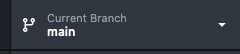
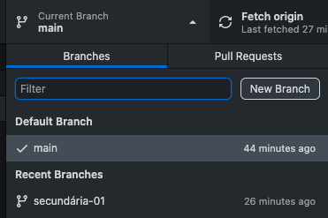
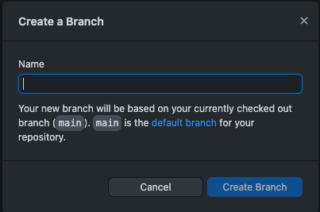
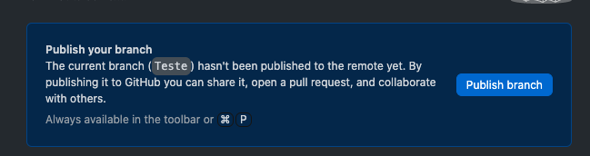
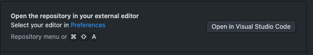
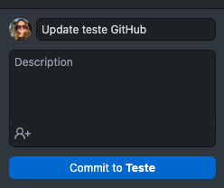
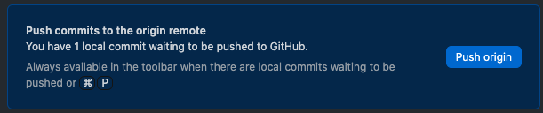

Branches
São ramificações de um projeto de software ou documento, com objetivo de desenvolver em paralelo novas funcionalidades, corrigir problemas e alterar código.
Branch master ou main:
braço principal de um projeto em um repositório.
Branch secundária:
braço paralelos de um projeto em um repositório.
Passos para criar uma branch dentro de um Projeto.
Clicar para alterar a branch. Canto superior da tela.

Adicionar "New Branch".

Nomear a nova Branch > Create Branch.

Publicar a Branch no repositório origem.

Para inciar a programar em paralalo na nova Branch, direciona a nova aba no Visual Studio Code.

Após finalizar as alterações, retorna ao GitHub Desktop e da um commit.

Clica em "Push Origem" para enviar ao repositório origem.
